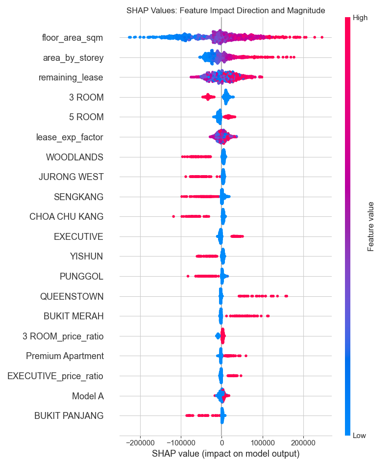
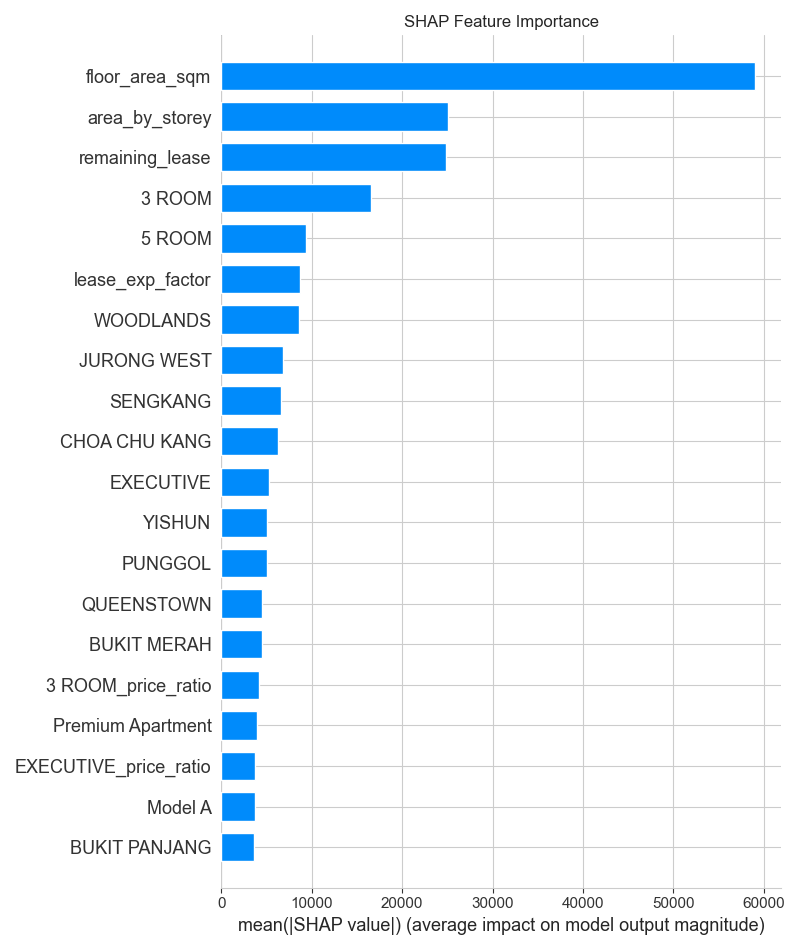

The optimized XGBoost model achieved an R² of 0.91 on test data with a MAPE of 7.83%, indicating strong predictive performance. Feature importance analysis reveals that location factors, flat types, and price ratio features are the strongest predictors of HDB resale prices.
The top 10 features based on XGBoost's built-in importance metric:
| Feature | Importance Score |
|---|---|
| EXECUTIVE_price_ratio | 0.075284 |
| BUKIT MERAH_price_ratio | 0.045537 |
| Terrace | 0.040079 |
| Terrace_price_ratio | 0.035942 |
| Type S1 | 0.033139 |
| BISHAN_price_ratio | 0.032341 |
| Type S2 | 0.030415 |
| 3 ROOM | 0.028977 |
| QUEENSTOWN | 0.028105 |
| BUKIT TIMAH | 0.026586 |
The top 10 features based on permutation importance (measuring drop in performance when feature values are shuffled):
| Feature | Importance Score |
|---|---|
| floor_area_sqm | 0.449648 |
| remaining_lease | 0.217014 |
| area_by_storey | 0.080760 |
| SENGKANG | 0.034143 |
| lease_exp_factor | 0.031254 |
| WOODLANDS | 0.028204 |
| QUEENSTOWN | 0.027983 |
| 3 ROOM | 0.025183 |
| CHOA CHU KANG | 0.024019 |
| JURONG WEST | 0.022062 |

Comparing built-in XGBoost importance with permutation importance shows some differences in top features. Permutation importance is generally more reliable as it directly measures the impact of each feature on model performance, while built-in importance is based on how often features are used in the model.
Features were grouped by category to understand which types of information most influence HDB pricing:
| Category | Total Importance | Feature Count | Top Features |
|---|---|---|---|
| Price Ratio | 0.487728 | 51 | EXECUTIVE_price_ratio, BUKIT MERAH_price_ratio, Terrace_price_ratio |
| Location | 0.447373 | 40 | BUKIT MERAH_price_ratio, BISHAN_price_ratio, QUEENSTOWN |
| Flat Type | 0.264799 | 14 | EXECUTIVE_price_ratio, Type S1, Type S2 |
| Other | 0.113456 | 23 | Terrace, CHOA CHU KANG, DBSS |
| Size & Floor | 0.054189 | 5 | CENTRAL AREA_price_ratio, CENTRAL AREA, floor_area_sqm |
| Lease | 0.013057 | 4 | long_lease, short_lease, remaining_lease |
The Price Ratio category has the highest total importance, indicating that price ratio factors are the most influential in determining HDB resale prices. However, when looking at average importance per feature, the Flat Type category features have the highest individual impact.
SHAP (SHapley Additive exPlanations) values show how each feature contributes to predictions:
The SHAP summary plot shows both the magnitude and direction of each feature's impact. Features at the top have the largest impact on predictions. Red points indicate higher feature values, blue points indicate lower values.
The SHAP importance plot ranks features by their absolute impact on model output, regardless of direction.
SHAP analysis reveals that some features have a clear positive or negative relationship with price, while others have more complex, non-linear effects. For example, [specific insight about a key feature from the SHAP plots] shows interesting patterns in how it influences predictions.
We tested model performance with different numbers of features to find the optimal balance between complexity and accuracy:
| Feature Count | RMSE ($) | R² | MAPE (%) | Training Time (s) |
|---|---|---|---|---|
| 5.0 | $166399.14 | 0.1425 | 28.21% | 1.6784 |
| 10.0 | $139735.70 | 0.3953 | 22.35% | 2.4965 |
| 20.0 | $127616.77 | 0.4956 | 20.21% | 3.1563 |
| 30.0 | $123234.79 | 0.5297 | 19.62% | 4.2583 |
| 50.0 | $98878.27 | 0.6972 | 15.80% | 6.0292 |
| 75.0 | $78752.67 | 0.8079 | 12.44% | 8.0744 |
| 100.0 | $54128.84 | 0.9093 | 7.70% | 11.9309 |
| 109.0 | $54228.12 | 0.9089 | 7.72% | 14.3200 |
The model achieves its best performance with 100.0 features. Using fewer features leads to underfitting, while using all features doesn't significantly improve performance and increases training time.
These findings have several implications for HDB property valuation and decision-making: